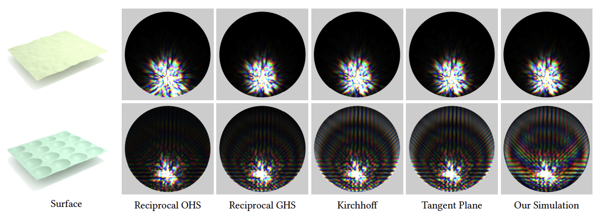
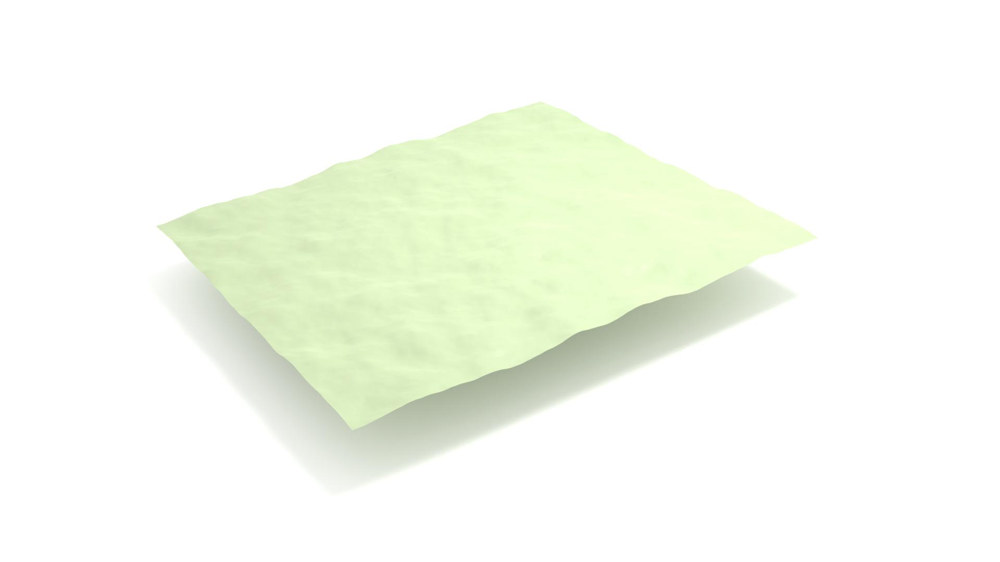
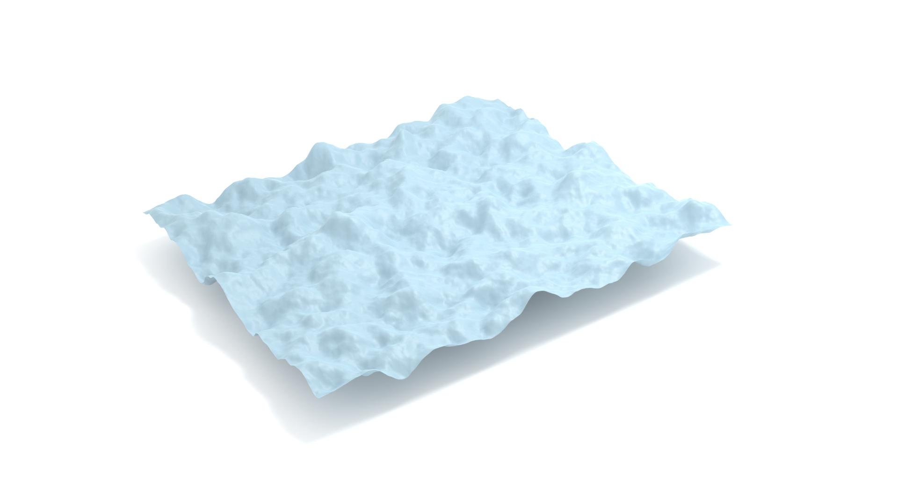
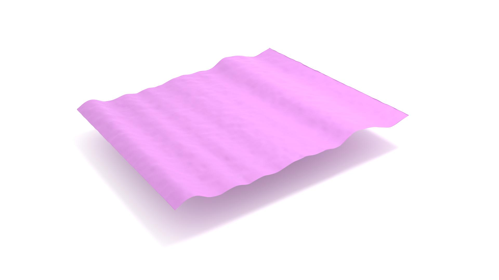
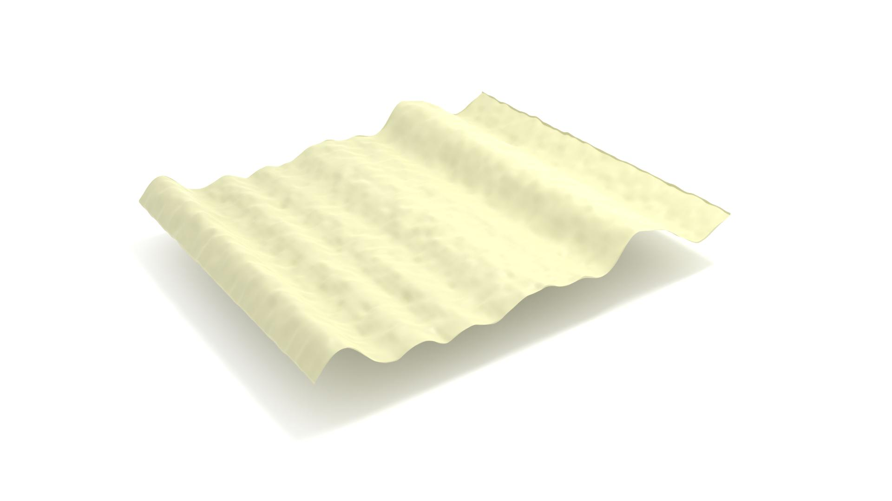
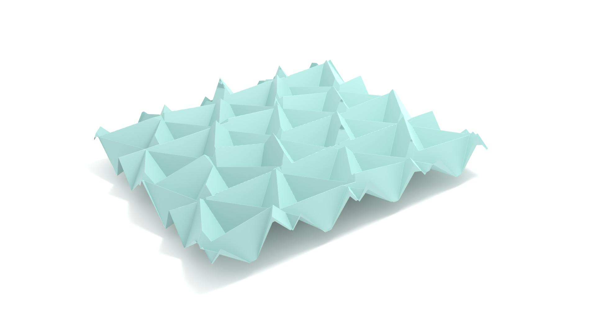
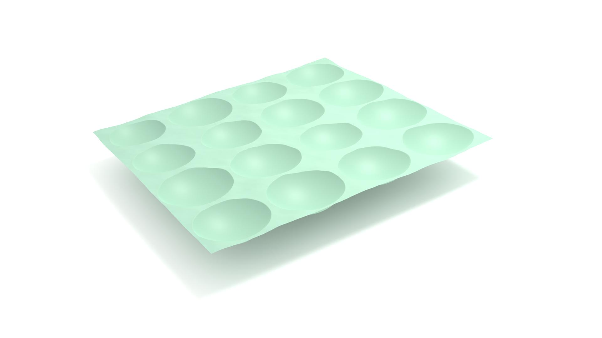

A Full-Wave Reference Simulator for Computing Surface Reflectance
1Cornell University, 2EPFL, 3University of Michigan
ACM Transactions on Graphics (SIGGRAPH 2023)
![ Wavelength-dependent BRDFs of two surfaces, computed using the original Harvey-Shack model, the generalized Harvey-Shack model, the Kirchhoff model, the tangent plane method in [Xia et al. 2023], and our simulation. The incident direction is given by 𝜃𝑖 = 36° and 𝜙𝑖 = 90°, and BRDF values are visualized for a large collection of outgoing directions. The models predict similar BRDFs for the smooth surface with isotropic bumps, while for the surface with spherical pits, our simulation predicts brighter color bands in the BRDF, which likely result from interference between reflection of different orders.](teaser.jpg){kind=link}
Abstract
Computing light reflection from rough surfaces is an important topic in
computer graphics. Reflection models developed based on geometric optics
fail to capture wave effects such as diffraction and interference, while
existing models based on physical optics approximations give erroneous
predictions under many circumstances (e.g. when multiple scattering from
the surface cannot be ignored).We present a scalable 3D full-wave simulator
for computing reference solutions to surface scattering problems, which
can be used to evaluate and guide the development of approximate models
for rendering. We investigate the range of validity for some existing
wave optics based reflection models; our results confirm these models for
low-roughness surfaces but also show that prior rendering methods do not
accurately predict the scattering behavior of some types of surfaces.
Our simulator is based on the boundary element method (BEM) and
accelerated using the adaptive integral method (AIM), and is implemented to
execute on modern GPUs. We demonstrate the simulator on domains up to
60 × 60 × 10 wavelengths, involving surface samples with significant height
variations. Furthermore, we propose a system for efficiently computing
BRDF values for large numbers of incident and outgoing directions,
by combining small simulations to characterize larger areas. Our simulator
will be released as an open-source toolkit for computing surface scattering.
Image Gallery

Isotropic (smooth)
Isotropic (smooth)

Isotropic (rough)
Isotropic (rough)

Brushed (smooth)
Brushed (smooth)

Brushed (rough)
Brushed (rough)

Corner cubes
Corner cubes

Spherical pits
Spherical pits
BRDF lobes computed for six different rough surfaces. Five incident directions were featured for each surface and five BRDF computation methods, including our full-wave simulation, were used. Click on each surface to view the colorful BRDF plots!
Acknowledgement
We would like to thank Dr. Anil Damle for his helpful suggestions
on iterative solvers. We also want to thank Nathaniel Sturniolo and
Dr. Lauren Zarzar for providing us with their experimental data on
grooved surfaces and for many fruitful discussions on structural
color formation and modeling. Lastly, we would like to thank Xi
Deng for her help with illustrating some of the figures in this paper.
This work is supported by the National Science Foundation under
grant IIS-1909467.